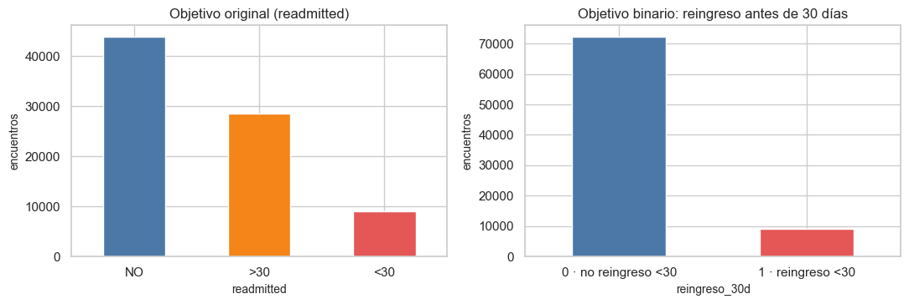

3. EDA de la variable objetivo: reingreso antes de 30 días#
Se describen readmitted y el objetivo binario reingreso_30d. La clase
positiva representa exclusivamente <30; >30 y NO forman la clase 0.
Se cuantifican encuentros, pacientes, prevalencia, desbalance y accuracy de la
predicción mayoritaria.
from pathlib import Path
import re, sys, warnings
import numpy as np
import pandas as pd
import matplotlib.pyplot as plt
import seaborn as sns
from IPython.display import Markdown, display
project_root = Path.cwd().resolve()
while not (project_root / "_config.yml").exists():
if project_root.parent == project_root:
raise FileNotFoundError("No se encontró _config.yml. Ejecuta el notebook dentro de la carpeta del libro.")
project_root = project_root.parent
if str(project_root) not in sys.path:
sys.path.insert(0, str(project_root))
for _folder in ("tables", "figures"): # se crean si no existen
(project_root / _folder).mkdir(exist_ok=True)
from src.project_utils import *
configure_plots()
pd.set_option("display.max_columns", 80)
pd.set_option("display.width", 170)
pd.set_option("display.max_colwidth", 70)
TABLES = project_root / "tables"
def md_out(text):
display(Markdown(text))
train = load_train()
y = train[TARGET]
n, pos = len(train), int(y.sum())
neg = n - pos
mayor = max(pos, neg) / n
ratio = max(pos, neg) / min(pos, neg)
pacientes_por_clase = train.groupby(TARGET)[GROUP_COL].nunique()
fig, axes = plt.subplots(1, 2, figsize=(11, 3.8))
orden = [c for c in ["NO", ">30", "<30"] if c in train[RAW_TARGET].unique()]
train[RAW_TARGET].value_counts().reindex(orden).plot.bar(ax=axes[0], color=["#4c78a8", "#f58518", "#e45756"][:len(orden)], rot=0)
axes[0].set_title("Objetivo original (readmitted)"); axes[0].set_ylabel("encuentros")
y.map({0: "0 · no reingreso <30", 1: "1 · reingreso <30"}).value_counts().sort_index().plot.bar(ax=axes[1], color=["#4c78a8", "#e45756"], rot=0)
axes[1].set_title("Objetivo binario: reingreso antes de 30 días"); axes[1].set_ylabel("encuentros")
plt.tight_layout(); save_figure(fig, "03_distribucion_objetivo.png"); plt.show()
tabla = pd.crosstab(train[RAW_TARGET], y.rename("reingreso_30d")).reindex(orden)
tabla["% del total"] = (100 * tabla.sum(axis=1) / n).round(2)
display(tabla)
objetivo = pd.DataFrame({
"clase": ["sin reingreso <30 (0)", "reingreso <30 (1)"],
"encuentros": [neg, pos],
"pacientes_con_al_menos_un_encuentro_de_la_clase": [pacientes_por_clase.get(0, 0), pacientes_por_clase.get(1, 0)],
"%": [100 * neg / n, 100 * pos / n],
}).round(2)
objetivo.to_csv(TABLES / "objetivo_distribucion.csv", index=False)
display(objetivo)

| reingreso_30d | 0 | 1 | % del total |
|---|---|---|---|
| readmitted | |||
| NO | 43911 | 0 | 53.94 |
| >30 | 28479 | 0 | 34.98 |
| <30 | 0 | 9023 | 11.08 |
| clase | encuentros | pacientes_con_al_menos_un_encuentro_de_la_clase | % | |
|---|---|---|---|---|
| 0 | sin reingreso <30 (0) | 72390 | 55413 | 88.92 |
| 1 | reingreso <30 (1) | 9023 | 6972 | 11.08 |
md_out(f"- **Clase positiva `<30`:** {es(pos, 0)} encuentros ({es(pos / n, 1, pct=True)}).\n"
f"- **Clase 0 (`>30` o `NO`):** {es(neg, 0)} encuentros ({es(neg / n, 1, pct=True)}).\n"
f"- **Desbalance:** {es(ratio, 2)} : 1; la clase minoritaria tiene {es(min(pos, neg), 0)} encuentros.\n"
f"- **Accuracy de predecir siempre la clase mayoritaria:** {es(mayor, 1, pct=True)}.\n\n"
"Este accuracy alto no implica utilidad: el modelo mayoritario tiene recall 0 para `<30`. Por ello se priorizan recall, precision, F1, ROC-AUC, Average Precision, curva PR y matriz de confusión, siempre con `<30` como clase positiva.")
Clase positiva
<30: 9.023 encuentros (11,1 %).Clase 0 (
>30oNO): 72.390 encuentros (88,9 %).Desbalance: 8,02 : 1; la clase minoritaria tiene 9.023 encuentros.
Accuracy de predecir siempre la clase mayoritaria: 88,9 %.
Este accuracy alto no implica utilidad: el modelo mayoritario tiene recall 0 para <30. Por ello se priorizan recall, precision, F1, ROC-AUC, Average Precision, curva PR y matriz de confusión, siempre con <30 como clase positiva.
Validación cruzada: casos de la clase minoritaria por pliegue#
La validación cruzada usa StratifiedGroupKFold con 5 pliegues (los mismos pliegues se reutilizan en los capítulos 5, 8 y 9): estratificada (misma proporción de clases) y agrupada por paciente
(un paciente nunca queda en dos pliegues). Se comprueba que cada pliegue tenga suficientes casos de cada clase.
filas = []
for k, (tr, va) in enumerate(cv_folds(y, train[GROUP_COL]), start=1):
filas.append({"pliegue": k, "encuentros_validación": len(va), "pacientes_validación": train.iloc[va][GROUP_COL].nunique(),
"reingresos_validación": int(y.iloc[va].sum()), "reingreso_%": 100 * y.iloc[va].mean(),
"pacientes_compartidos_con_entrenamiento": len(set(train.iloc[tr][GROUP_COL]) & set(train.iloc[va][GROUP_COL]))})
folds = pd.DataFrame(filas)
display(folds.round(2))
md_out(f"Cada pliegue tiene entre {es(folds['reingresos_validación'].min(), 0)} y {es(folds['reingresos_validación'].max(), 0)} casos positivos y "
f"ningún paciente compartido con su entrenamiento ({int(folds['pacientes_compartidos_con_entrenamiento'].sum())} en total): "
"la validación es estable y no hay contaminación por paciente.")
| pliegue | encuentros_validación | pacientes_validación | reingresos_validación | reingreso_% | pacientes_compartidos_con_entrenamiento | |
|---|---|---|---|---|---|---|
| 0 | 1 | 16362 | 11441 | 1850 | 11.31 | 0 |
| 1 | 2 | 16374 | 11470 | 1839 | 11.23 | 0 |
| 2 | 3 | 16277 | 11414 | 1820 | 11.18 | 0 |
| 3 | 4 | 16062 | 11430 | 1760 | 10.96 | 0 |
| 4 | 5 | 16338 | 11476 | 1754 | 10.74 | 0 |
Cada pliegue tiene entre 1.754 y 1.850 casos positivos y ningún paciente compartido con su entrenamiento (0 en total): la validación es estable y no hay contaminación por paciente.
Coherencia con el objetivo original#
readmitted se conserva únicamente para describir sus tres categorías y para
construir reingreso_30d. No entra como predictora. La definición <30 frente
a >30/NO coincide con la formulación de reingreso temprano del artículo
original y permanece fija en todo el libro.